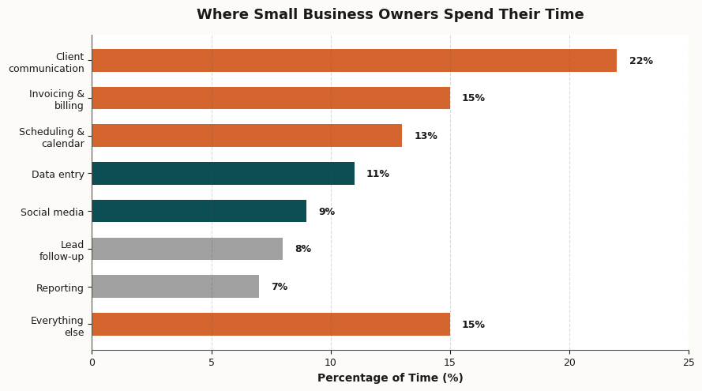
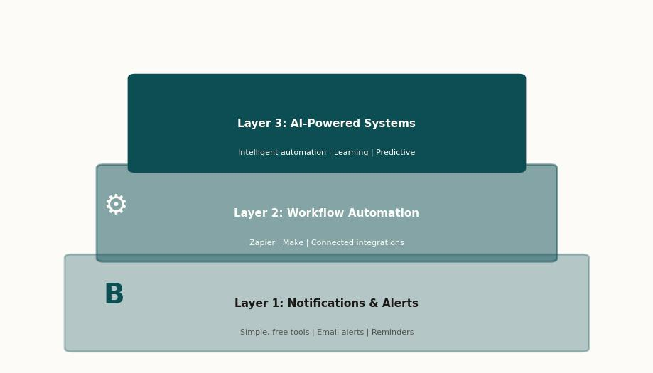
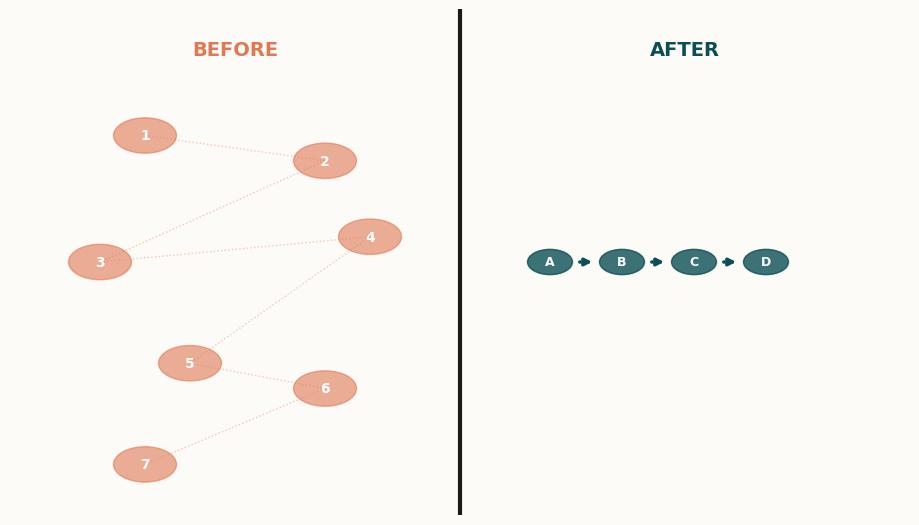
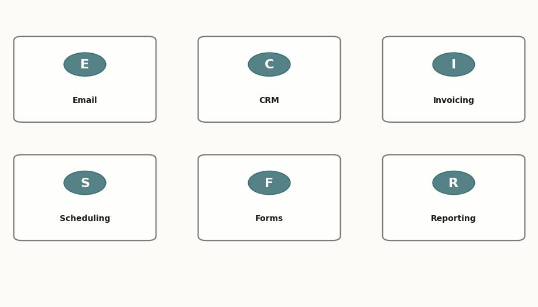
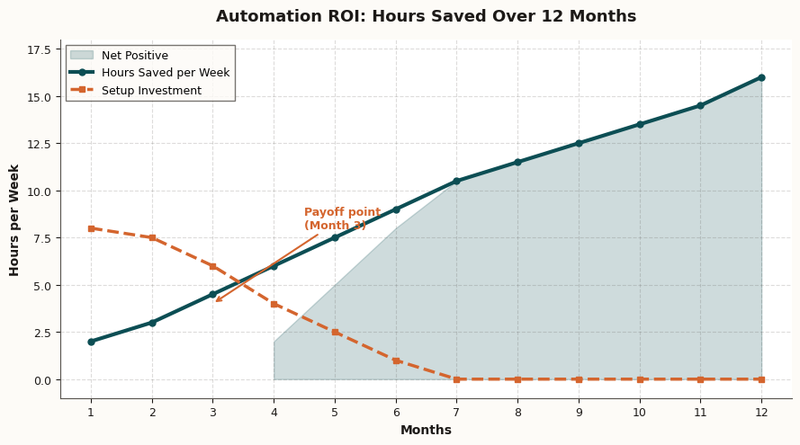
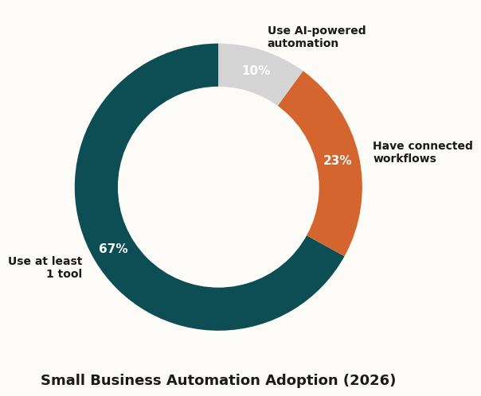

That moment kind of woke me up. Because the thing about automation isn't that it's some futuristic concept you need an IT department to pull off. It's that most of us are already drowning in exactly the kind of repetitive, mindless tasks that a ten-minute setup could eliminate forever, and we just keep doing them because we haven't stopped long enough to notice.
So here's what I want to talk about: how to actually automate the stuff that's eating your time as a small business owner, what to start with, what to ignore, and why none of this requires replacing a single person on your team. I've done this for my own business and for clients, and the pattern is surprisingly consistent once you see it.
The 16 hours you don't realize you're wasting
There's a stat that gets thrown around a lot in the small business world, and I used to think it was exaggerated until I actually tracked my own time for two weeks. The average small business owner spends about 16 hours per week on repetitive administrative tasks. That's two full workdays. Gone. Not on sales calls, not on delivering the actual service, not on thinking about where the business is going. Just on stuff like sending follow-up emails, updating spreadsheets, scheduling appointments, and chasing invoices.

When I tracked my own week, it was worse than I expected. I was spending almost five hours just on client communication that could have been templated, another three on invoicing that I was doing by hand for no good reason, and probably two hours on scheduling back-and-forth that a simple booking link would have killed instantly. That's ten hours right there, and I'm someone who thinks about this stuff for a living.
The thing that makes this tricky is that no single task feels like a big deal. Sending one follow-up email takes two minutes. Updating one row in a spreadsheet takes thirty seconds. But you do those things dozens of times a day, five days a week, and suddenly you've lost a quarter of your working life to tasks that a computer could do better than you while you sleep.
And here's the part that really got to me when I was honest about it: I wasn't just losing time. I was losing quality. Because by the time I got through all the admin stuff in the morning, the actual creative and strategic work I needed to do was getting whatever energy I had left over, which some days wasn't much. The admin wasn't just stealing hours, it was stealing my best hours.
What automation actually means (it's not what you think)
OK so when I say "automation," I need to clear something up because the word has a lot of baggage. Most people hear automation and they picture one of two things: either a massive enterprise system that costs six figures and requires a team of developers, or some kind of AI robot that's going to replace human workers. Neither of those is what I'm talking about.
What I'm talking about is much simpler. It's setting up a rule that says "when this thing happens, do that thing automatically." When a new lead fills out your contact form, automatically send them a confirmation email, add their info to your CRM, and create a task for you to call them back. That whole sequence takes a human about eight minutes to do manually. It takes an automation about three seconds, and it never forgets to do it.

I think of it in three layers, and this is important because almost everyone tries to start at the wrong one.
Layer one is just notifications and alerts. This is the free, zero-risk starting point. You set up your email to auto-sort incoming messages by type. You create a notification that pings you when a form gets submitted. You turn on the reminder feature in your calendar app so you stop forgetting follow-ups. There's nothing to break here and nothing to pay for. Most of the tools you already use have these features built in, and you're just not using them.
Layer two is workflow automation. This is where tools like Zapier and Make come in, and it's where the real time savings start to pile up. You connect your tools to each other so data flows between them without you touching it. Your contact form submission goes into your CRM, triggers a welcome email, creates a task in your project board, and sends you a Slack notification. You set it up once and it runs forever. The cost is usually $20 to $50 a month, and the time savings are typically 8 to 12 hours per week once you've got a few workflows running.
Layer three is AI-powered automation. This is the newest layer and honestly, most small businesses don't need it yet. This is where you've got chatbots answering customer questions, AI sorting and prioritizing your inbox, or automated systems that can draft invoices based on project completion. It's powerful but it's complex, and jumping here before you've nailed layers one and two is a recipe for frustration and wasted money.
If you haven't set up basic email filters and calendar reminders yet, you have no business looking at AI chatbots. Get the free stuff working first. Seriously. I've watched too many business owners spend $500 a month on tools they don't need because they skipped the stuff that costs nothing.
The five automations every small business should set up first
I'm going to be specific here because vague advice is useless advice. These are the five automations I set up for every small business client I work with, in this order, and they consistently save between 10 and 15 hours per week combined. None of them require coding. All of them can be done in an afternoon.
1. Automatic lead response. When someone fills out your contact form or sends an inquiry, they should get a response within 60 seconds. Not because you're sitting there watching your inbox, but because you've set up an auto-responder that says "Got your message, I'll get back to you within [timeframe], here's what to expect." This alone can double your lead-to-customer conversion rate. I'm not exaggerating. The data on response time and conversion is overwhelming, and most businesses take 4 to 6 hours to respond to a new inquiry. By then the customer has already called your competitor.

2. Invoice automation. Stop creating invoices from scratch. Use a tool that generates them from templates, sends them automatically when a project hits a certain stage, and follows up on unpaid invoices without you having to send awkward reminder emails. I use FreshBooks for this but there are a dozen good options. The point isn't which tool, it's that the process should happen without you thinking about it. I used to spend three hours a week on invoicing. Now I spend zero.
3. Appointment scheduling. If you're still doing the "what time works for you" email dance, stop it today. Set up Calendly or Cal.com or whatever scheduling tool fits your workflow, and just send people a link. They pick a time, it goes on both your calendars, they get a confirmation and a reminder, and you never have to coordinate a meeting time via email again. This saved me about four hours a week, and I was genuinely angry at myself for not doing it sooner.
4. Client onboarding sequence. When you land a new client, what happens? If the answer is "I manually send them a welcome email, then a questionnaire, then access to our shared folder, then a kickoff meeting invite," that entire chain should be one automation. New client marked in your CRM triggers the welcome email, which includes the questionnaire link, which on completion triggers the folder creation and meeting invite. You don't touch any of it.
5. Weekly reporting. Whatever metrics you check on a regular basis, whether that's revenue, leads, website traffic, project status, you should have a dashboard that pulls it together automatically. I built mine in Google Sheets with some simple API connections, and now every Monday morning I've got a one-page snapshot of the business waiting for me instead of spending an hour pulling numbers from five different tools.

The math that makes this obvious
I want to put real numbers on this because I think it makes the case better than any theoretical argument could.
Let's say you value your time at $75 an hour, which is pretty conservative for most business owners when you factor in what you could be doing instead of admin work. If you're spending 16 hours a week on automatable tasks, that's $1,200 per week in time cost. Over a year, that's $62,400 worth of your time going to work that a computer could do.
The cost to set up the five automations I described above? If you do it yourself, you're looking at maybe $50 to $100 per month in tool subscriptions and a weekend of setup time. If you hire someone to do it for you, it's typically a one-time setup fee of $500 to $3,000 depending on complexity, plus whatever the monthly tool costs are.

Even in the most conservative scenario, where you only recover 8 hours a week instead of 16 and you paid someone $3,000 for the setup, you break even in less than a month. After that, you're getting back two full workdays every single week, forever. Those aren't hypothetical hours either. They're hours you can spend on sales calls, client work, strategic planning, or just going home at 5pm instead of 8pm. I know which one I'd pick.
What about my team, though?
This is the question I get more than any other, and I think it deserves a direct answer. No, automating your business does not mean firing your team. In fact, every client I've helped automate has told me the same thing afterward: their team is happier now because they're doing less soul-crushing busywork and more meaningful work that actually uses their skills.
Think about it this way. If your office manager spends three hours a day on data entry and invoice processing, and you automate that away, you haven't eliminated their job. You've freed up three hours of their day to do things that actually require a human brain: talking to clients, solving problems, improving processes, managing relationships. The stuff they were probably hired to do in the first place but never had time for because they were too busy copying data between spreadsheets.

The real risk isn't automating too much. It's automating nothing and watching your competitors pull ahead because their team is spending time on growth while yours is stuck in admin quicksand. And yes, I've watched that happen. A painting company I know refused to adopt any automation for two years while a competitor half their size built out a fully automated lead capture and follow-up system. That competitor now handles twice the lead volume with the same team size. They didn't hire anyone new. They just stopped wasting their people's time on work that machines do better.
Your team doesn't want to spend their days on data entry and email templates. Give them the tools to stop, and they'll give you back the kind of work you actually hired them for.
Where to start this week
If you're reading this and thinking "OK I'm convinced but I have no idea where to start," here's what I'd do this week if I were in your shoes. Not next month. This week.
First, track your time for three days. Just write down what you're doing every 30 minutes. Don't try to change anything yet, just observe. You'll be surprised at where the time goes. I was.
Second, pick the single biggest time sink from that list and Google "[that task] + automation." You'll find a tutorial. The tools I mentioned (Zapier, Calendly, FreshBooks) all have free tiers and setup guides that assume you're not technical. Because most of their users aren't.
Third, and this is the one most people skip because it feels like a luxury, actually calculate what that time is worth to you. Write the number down. Put it somewhere you'll see it. Because when you're three weeks into a workflow that's saving you six hours a week and you're wondering if it was worth the $29 monthly subscription, that number will remind you that it was.
And if you get to a point where you're looking at all of this and thinking "I see the value but I genuinely don't have time to set this up myself," that's exactly the kind of thing we do at StackBuilt. We come in, audit your operations, identify the biggest time sinks, and build the automations for you. Our clients typically see those 10 to 15 hours back within the first month. You can see what that looks like here.